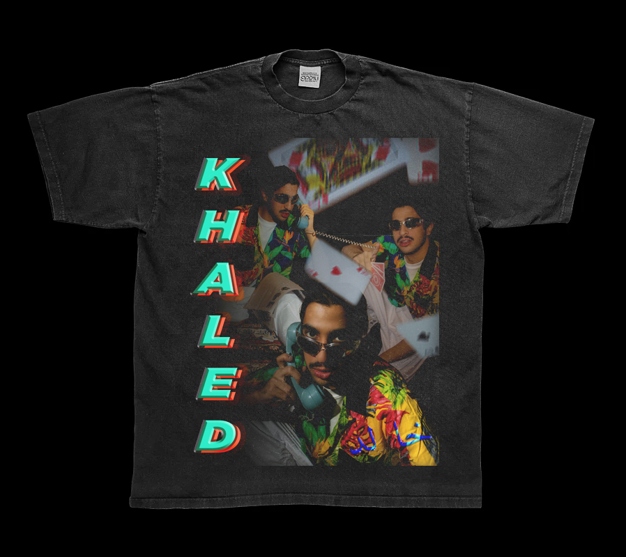

Al-Majles
Experimental Design 2022.
In collabration with my friend @toomysvisuals, Al-Majles, captures the essence of the psychology of Arabia men through the stylization of late 90s editing. My process consisted a mix of various adobe platforms such as After Effects, Photoshop, and Illustrator to achieve this nostalgic effect.
Photos by @toomysvisuals
Edited by @oluschi
Lighting by @hayaalateeqi
Location by @khalid.mousa


